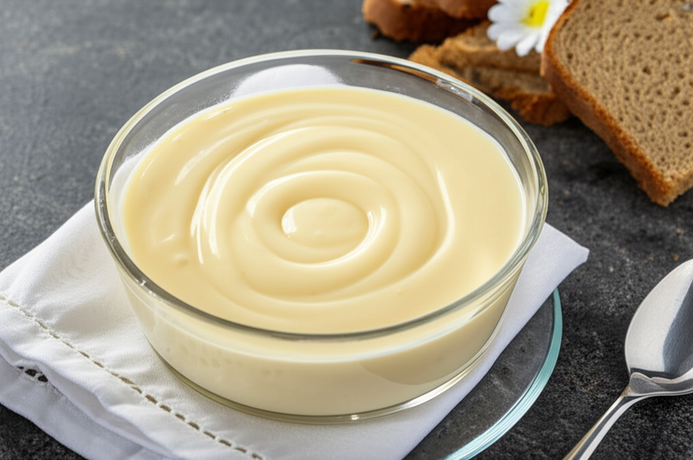
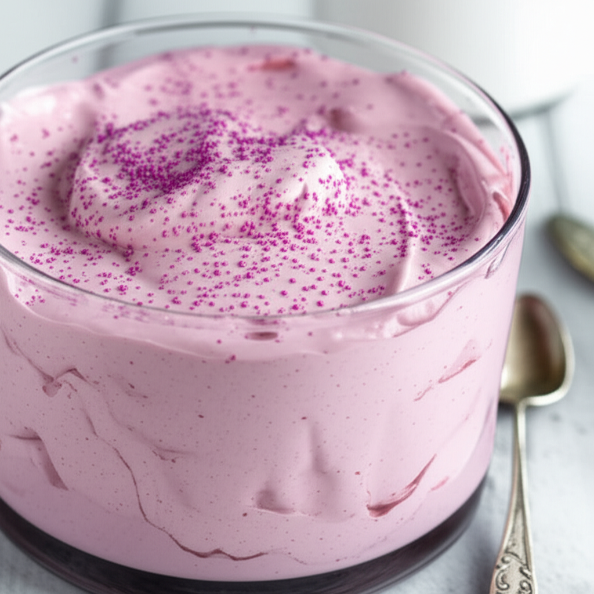
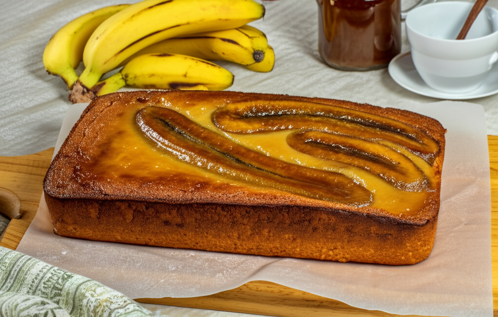

Creme de Leite e Maizena
Prepare-se para uma sobremesa leve, vremosa e que vai te consquistar! Com apenas três ingredientes, e...
Ver ReceitaReceitas na palma da sua mão
Crie receitas deliciosas com os ingredientes que você tem em casa ou nas
suas preferências culinárias.
Informe os ingredientes disponiveis e nossas preferências para gerar sua receita
Ir para o Gerador AvançadoCrie receitas personalizadas em três passos simples
Informe os ingredientes que você tem disponíveis ou gostaria de usar.
Informe os ingredientes que você tem disponíveis ou gostaria de usar.
Informe os ingredientes que você tem disponíveis ou gostaria de usar.
Busque entre milhares de receitas ou explore nossas sugestões populares
Pesquisas populares

Prepare-se para uma sobremesa leve, vremosa e que vai te consquistar! Com apenas três ingredientes, e...
Ver Receita
Prepare um mousse incrivelmente fácil e saboroso com Nesquick e Nescau! Perfeito para qualquer momento...
Ver Receita
Prepare-se para uma explosão de sabor! Este bolo cremoso de bana da terra é a combinação perfeita...
Ver Receita857 receitas
146 receitas
623 receitas
Experimente nosso gerador de receitas agora mesmo e descubra novas possibilidades
Criar Minha Receita